| LTTng Tracer Control | ||
|---|---|---|
|
|
|
|
| LTTng | LTTng Kernel Analysis | |
The LTTng Tracer Control in Eclipse for the LTTng Tracer toolchain version v2.0 (or later) is done using SSH and requires an SSH server to be running on the remote host. For the SSH connection the SSH implementation of Remote Services is used. The functions to control the LTTng tracer (e.g. start and stop), either locally or remotely, are available from a dedicated Control View.
In the following sections the LTTng 2.0 tracer control integration in Eclipse is described. Please refer to the LTTng 2.0 tracer control command line manual for more details and descriptions about all commands and their command line parameters References.
To open the Control View, select ' Window->Show View->Other...->LTTng->Control View.
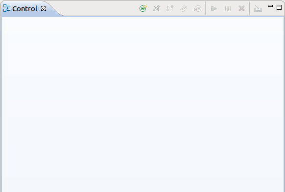
To connect to a remote host, select the New Connection button in the Control View.
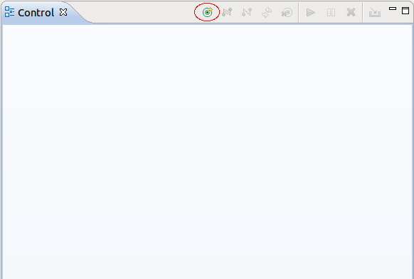
A new dialog is opened for selecting a remote connection. You can also edit or define a remote connection from here.
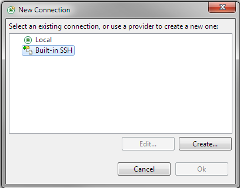
To define a new remote host using the default SSH service, select Buit-in SSH and then select Create.... This will start the standard New Connection wizard provided by the Remote Services plugin. Similar, to edit the definition of a remote connection, select Edit... and use the Edit Connection wizard provided by the SSH service. In case you have installed an additional adapter for the Remote Services, you can choose to define a remote connection based on this adapter.
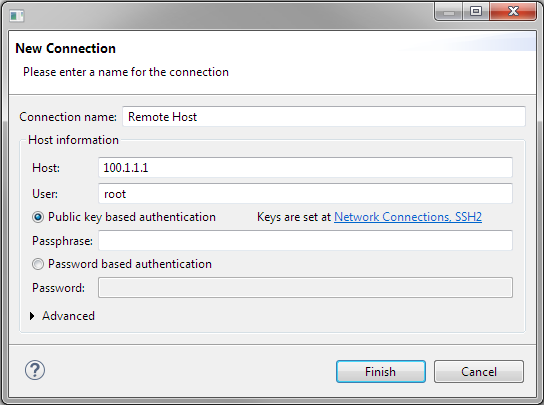
To use an existing connection definition, select the relevant entry in the tree and then select Ok.
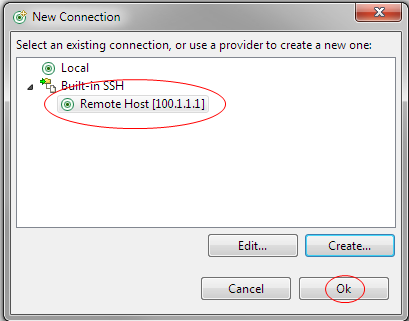
A new display will show for providing the user name and password. This display only opens if no password had been saved before. Enter user name and password in the Password Required dialog box and select Ok.
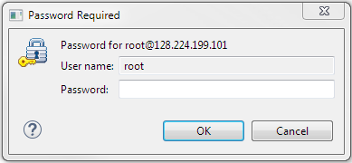
After pressing Ok the SSH connection will be established and after successful login the Control View implementation retrieves the LTTng Tracer Control information. This information will be displayed in the Control View in form of a tree structure.
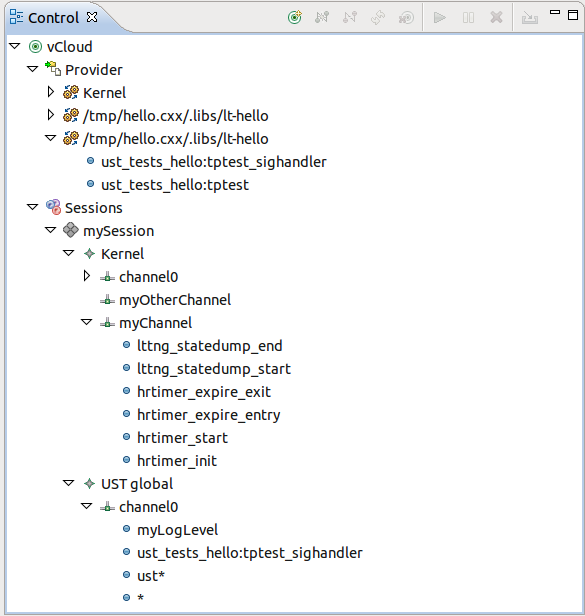
The top level tree node is the representation of the remote connection (host). The connection name of the connection will be displayed. Depending on the connection state different icons are displayed. If the node is CONNECTED the icon is shown , otherwise (states CONNECTING, DISCONNNECTING or DISCONNECTED the icon is .
Under the host level two folder groups are located. The first one is the Provider group. The second one is the Sessions group.
Under the Provider group all trace providers are displayed. Trace providers are Kernel and any user space application that supports UST tracing. Under each provider a corresponding list of events are displayed.
Under the Sessions group all current sessions will be shown. The level under the sessions show the configured domains. Currently the LTTng 2.0 Tracer Toolchan supports domain Kernel and UST global. Under each domain the configured channels will be displayed. The last level is under the channels where the configured events are displayed.
Each session can be ACTIVE or INACTIVE. Active means that tracing has been started, inactive means that the tracing has been stopped. Depending on the state of a session a different icon is displayed. The icon for an active session is . The icon for an inactive session is .
Each channel can be ENABLED or DISABLED. An enabled channel means that all configured events of that channel will be traced and a disabled channel won't trace any of its configured events. Different icons are displayed depending on the state of the channel. The icon for an enabled channel is and the icon for a disabled channel is .
Events within a channel can be in state ENABLED or DISABLED. Enabled events are stored in the trace when passed during program execution. Disabled events on the other hand won't be traced. Depending on the state of the event the icons for the event is different. An enabled event has the icon and a disabled event the icon 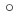.
To disconnect from a remote host, select the host in the Control View and press the Disconnect button. Alternatively, press the right mouse button. A context-sensitive menu will show. Select the Disconnect button.
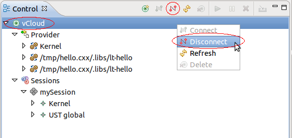
To connect to a remote host, select the host in the Control View and press the Connect button. Alternatively, press the right mouse button. A context-sensitive menu will show. Select the Connect button. This will start the connection process as discribed in Creating a New Connection to a Remote Host.
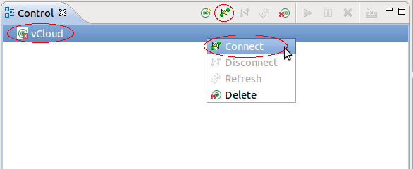
To delete a remote host connection, select the host in the Control View and press the Delete button. Alternatively, press the right mouse button. A context-sensitive menu will show. Select the Delete button. For that command to be active the connection state has to be DISCONNECTED and the trace has to be closed.
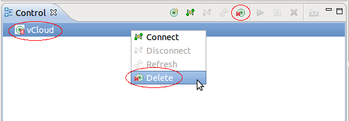
To create a tracing session, select the tree node Sessions and press the right mouse button. Then select the Create Session... button of the context-sensitive menu.
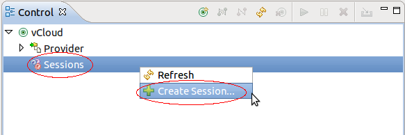
A dialog box will open for entering information about the session to be created.
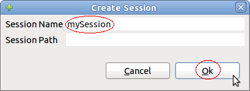
Fill in the Session Name and optionally the Session Path and press Ok. Upon successful operation a new session will be created and added under the tree node Sessions.
LTTng Tools version v2.1.0 introduces the possibility to configure the trace output location at session creation time. The trace can be stored in the (tracer) local file system or can be transferred over the network.
To create a tracing session and configure the trace output, open the trace session dialog as described in chapter Creating a Tracing Session. A dialog box will open for entering information about the session to be created.
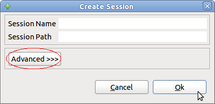
The button Advanced >>> will only show if the remote host has LTTng Tools v2.1.0 installed. To configure the trace output select the Advanced >>> button. The Dialog box will be shown new fields to configure the trace output location.
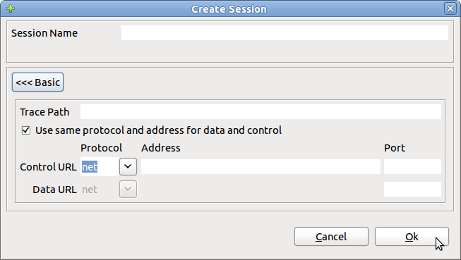
By default, the button Use same protocol and address for data and control is selected which allows to configure the same Protocol and Address for both data URL and control URL.
If button Use same protocol and address for data and control is selected the Protocol can be net for the default network protocol which is TCP (IPv4), net6 for the default network protocol which is TCP (IPv6) and file for the local file system. For net and net6 the port can be configured. Enter a value in Port for data and control URL or keep them empty for the default port to be used. Using file as protocol no port can be configured and the text fields are disabled.
If button Use same protocol and address for data and control is not selected the Protocol can be net for the default network protocol which is TCP (IPv4), net6 for the default network protocol which is TCP (IPv6), tcp for the network protocol TCP (IPv4) and tcp6 for the network protocol TCP (IPv6). Note that for net and net6 always the default port is used and hence the port text fields are disabled. To configure non-default ports use tcp or tcp6.
The text field Trace Path allows for specifying the path relative to the location defined by the relayd or relative to the location specified by the Address when using protocol file. For more information about the relayd see LTTng relayd User Manual in chapter References.
To create a session with advanced options, fill in the relevant parameters and press Ok. Upon successful operation a new session will be created and added under the tree node Sessions.
LTTng Tools version v2.3.0 introduces the possibility to create snapshot tracing sessions. After starting tracing the trace events are not stored on disk or over the network. They are only transfered to disk or over the network when the user records a snapshot. To create such a snapshot session, open the trace session dialog as described in chapter Creating a Tracing Session.
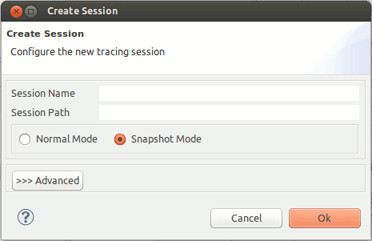
Fill in all necessary information, select the radio button for Snapshot Mode and press Ok. By default, the location for the snapshot output will be on the host where the host is located.
Refer to chapter Recording a Snapshot for how to create a snapshot.
LTTng Tools version v2.4.0 introduces the possibility to create live tracing sessions. The live mode allows you to stream the trace and view it while it's being recorded. To create such a live session, open the trace session dialog as described in chapter Creating a Tracing Session.
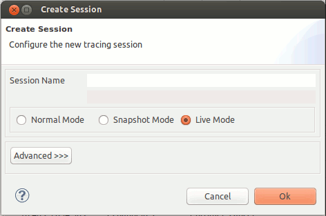
In the advanced options, it is possible to set the Live Delay. The Live Delay is the delay in micro seconds before the data is flushed and streamed.
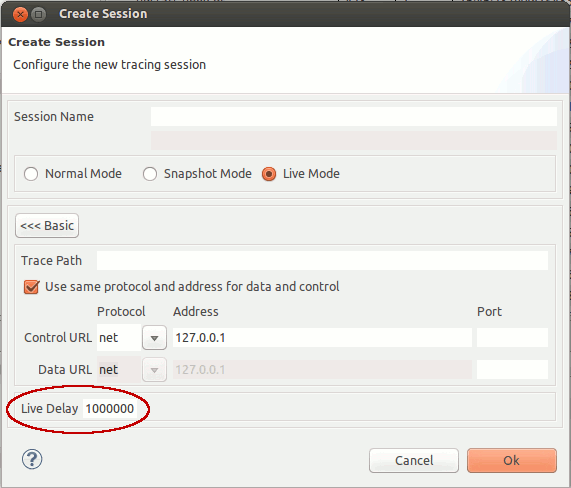
Fill in all necessary information, select the radio button for Live Mode and press Ok.
Enabling channels can be done using a session tree node when the domain hasn't be created in the session or, alternatively on a domain tree node of a session in case the domain is already available.
To enable a channel, select the tree node of the relevant session and press the right mouse button. Then select the Enable Channel... button of the context-sensitive menu.
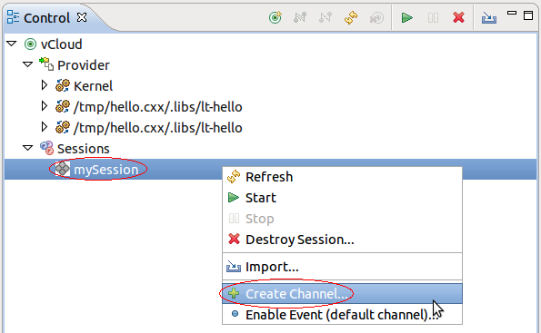
A dialog box will open for entering information about the channel to be created.
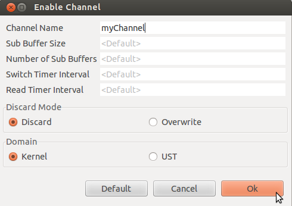
By default the domain Kernel is selected. To create a UST channel, select UST under the domain section. The label <Default> in any text box indicates that the default value of the tracer will be configured. To initialize the dialog box press button Default.
If required update the following channel information and then press Ok.
Upon successful operation, the requested domain will be created under the session tree node as well as the requested channel will be added under the domain. The channel will be ENABLED.
Since LTTng Tools v2.2.0 it is possible to set the maximum size of trace files and the maximum number of them. These options are located in the same dialog box that is used for enabling channels.
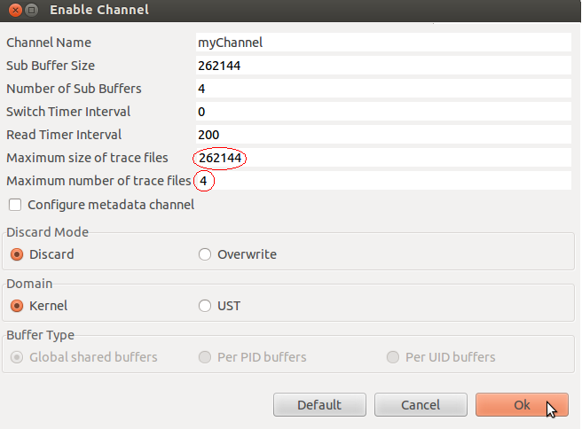
Since LTTng Tools v2.2.0 it is possible to configure the type of buffers for UST application. It is now possible to choose between per UID buffers (per user ID) and per PID buffers (per process ID) using the dialog box for enabling channels.
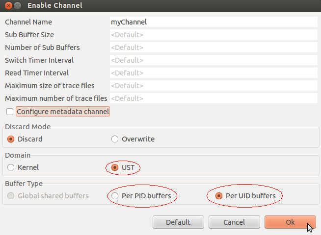
If no buffer type is selected then the default value of the tracer will be configured.
Note that Global shared buffers is only for kernel channel and is pre-selected when Kernel is selected in the dalog box.
Since LTTng Tools v2.2.0 it is possible to configure periodical flush for the metadata channel. To set this, use the checkbox Configure metadata channel then fill the switch timer interval.
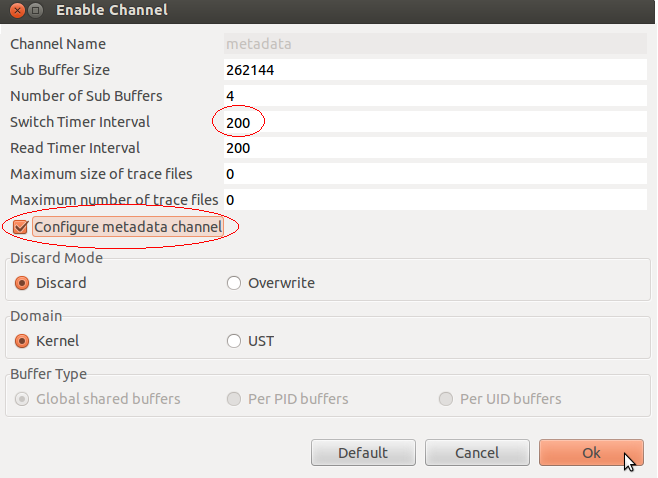
Once a domain is available, channels can be enabled directly using the domain. To enable a channel under an existing domain, select the tree node of the relevant domain and press the right mouse button. Then select the Enable Channel... button of the context-sensitive menu.
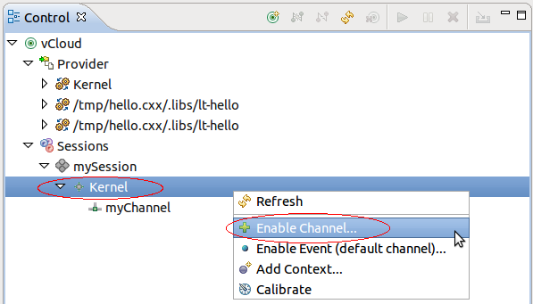
The dialog box for enabling channel will open for entering information about the channel to be created. Note that the domain is pre-selected and cannot be changed. Fill the relevant information and press Ok.
To disable one or more enabled channels, select the tree nodes of the relevant channels and press the right mouse button. Then select the Disable Channel menu item of the context-sensitive menu.
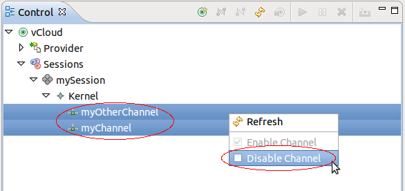
Upon successful operation, the selected channels will be DISABLED and the icons for the channels will be updated.
To enable one or more disabled channels, select the tree nodes of the relevant channels and press the right mouse button. Then select the Enable Channel menu item of the context-sensitive menu.
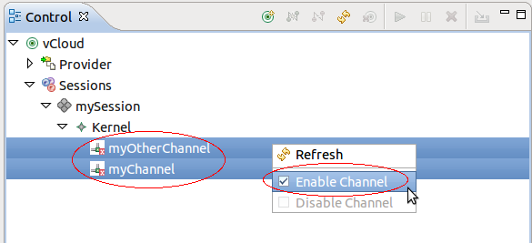
Upon successful operation, the selected channels will be ENABLED and the icons for the channels will be updated.
Enabling events can be done using different levels in the tree node. It can be done on the session, domain level and channel level. For the case of session or domain, i.e. when no specific channels is assigned then enabling of events is done on the default channel with the name channel0 which created, if not already exists, by the LTTng tracer control on the server side.
To enable events, select the tree node of the relevant session and press the right mouse button. Then select the Enable Event (default channel)... button of the context-sensitive menu.
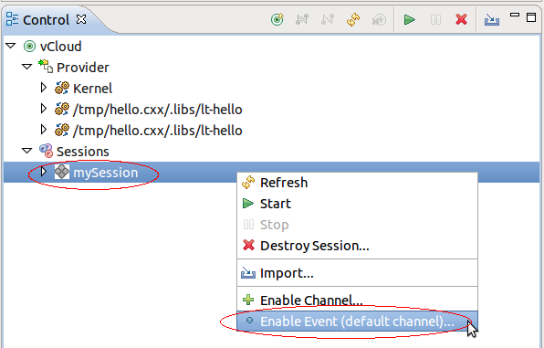
A dialog box will open for entering information about events to be enabled.
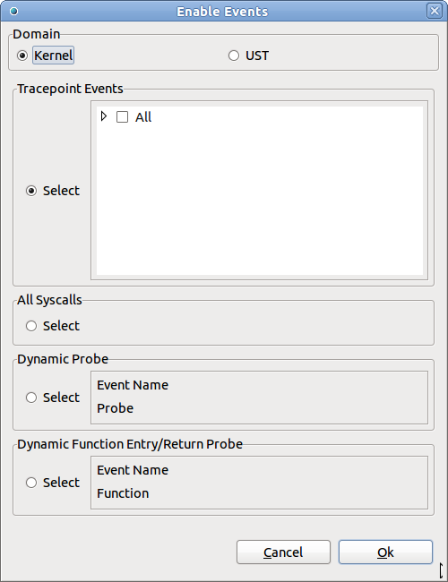
By default the domain Kernel is selected and the kernel specific data sections are created. From this dialog box kernel Tracepoint events, System calls (Syscall), a Dynamic Probe or a Dynamic Function entry/return probe can be enabled. Note that events of one of these types at a time can be enabled.
To enable Tracepoint events, first select the corresponding Select button, then select either all tracepoins (select All) or select selectively one or more tracepoints in the displayed tree of tracepoints and finally press Ok.
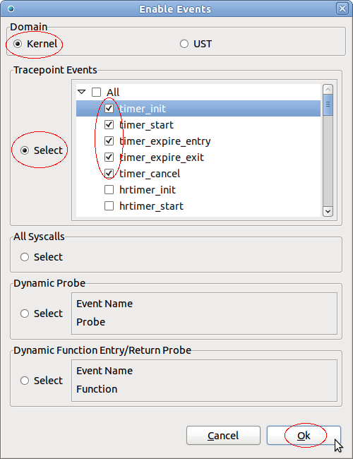
Upon successful operation, the domain Kernel will be created in the tree (if neccessary), the default channel with name "channel0" will be added under the domain (if necessary) as well as all requested events of type TRACEPOINT under the channel. The channel and events will be ENABLED.
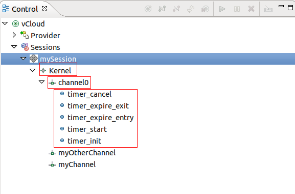
To enable all Syscalls, select the corresponding Select button and press Ok.
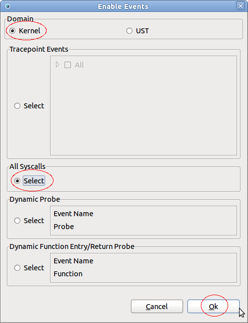
Upon successful operation, the event with the name syscalls and event type SYSCALL will be added under the default channel (channel0). If necessary the domain Kernel and the channel channel0 will be created.
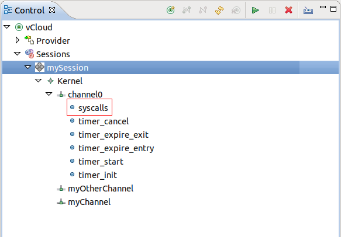
To enable a Dynamic Probe event, select the corresponding Select button, fill the Event Name and Probe fields and press Ok. Note that the probe can be an address, symbol or a symbol+offset where the address and offset can be octal (0NNN...), decimal (NNN...) or hexadecimal (0xNNN...).
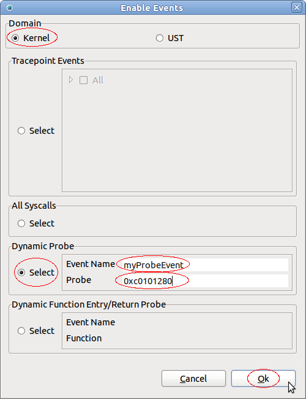
Upon successful operation, the dynamic probe event with the given name and event type PROBE will be added under the default channel (channel0). If necessary the domain Kernel and the channel channel0 will be created.
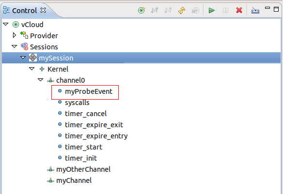
To enable a Dynamic Function entry/return Probe event, select the corresponding Select button, fill the Event Name and Function fields and press Ok. Note that the funtion probe can be an address, symbol or a symbol+offset where the address and offset can be octal (0NNN...), decimal (NNN...) or hexadecimal (0xNNN...).
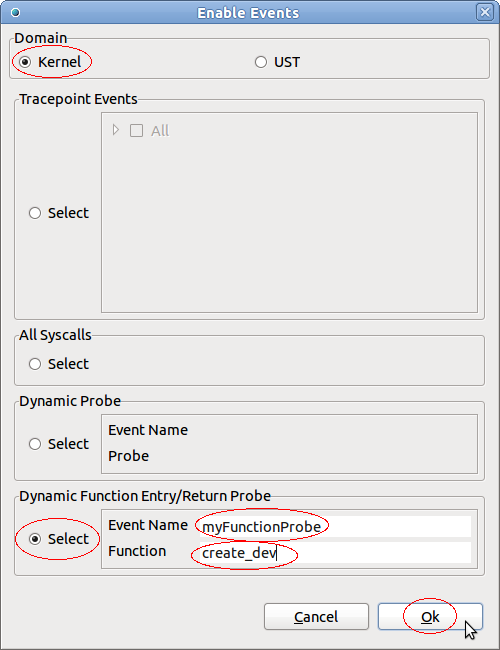
Upon successful operation, the dynamic function probe event with the given name and event type PROBE will be added under the default channel (channel0). If necessary the domain Kernel and the channel channel0 will be created.
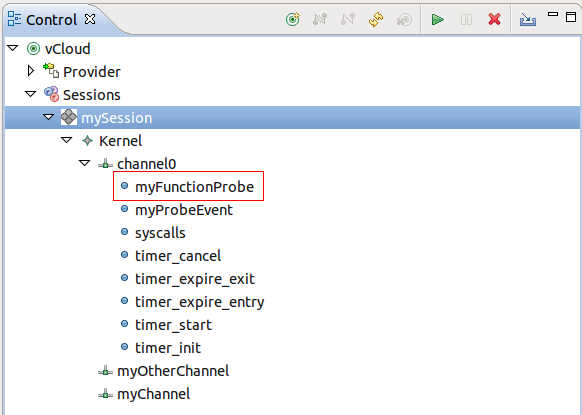
For enabling UST events, first open the enable events dialog as described in section Enabling Kernel Events On Session Level and select domain UST.
To enable Tracepoint events, first select the corresponding Select button, then select either all tracepoins (select All) or select selectively one or more tracepoints in the displayed tree of tracepoints and finally press Ok.
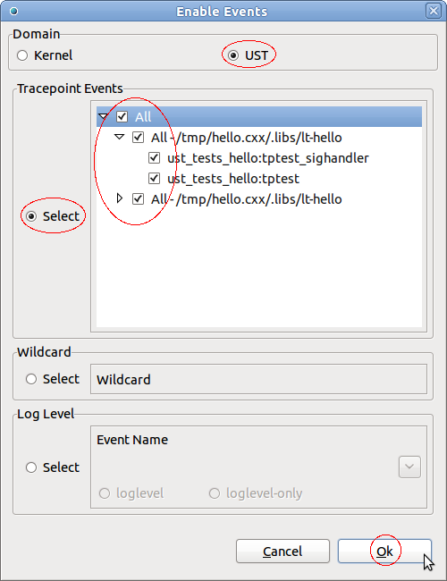
Upon successful operation, the domain UST global will be created in the tree (if neccessary), the default channel with name "channel0" will be added under the domain (if necessary) as well as all requested events under the channel. The channel and events will be ENABLED. Note that for the case that All tracepoints were selected the wildcard * is used which will be shown in the Control View as below.
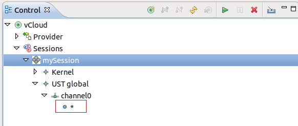
For UST it is possible to enable Tracepoint events using a wildcard. To enable Tracepoint events with a wildcard, select first the corresponding Select button, fill the Wildcard field and press Ok.
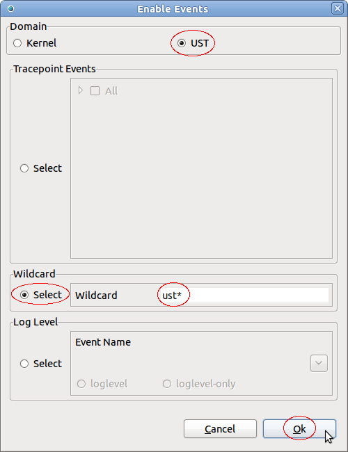
Upon successful operation, the event with the given wildcard and event type TRACEPOINT will be added under the default channel (channel0). If necessary the domain UST global and the channel channel0 will be created.
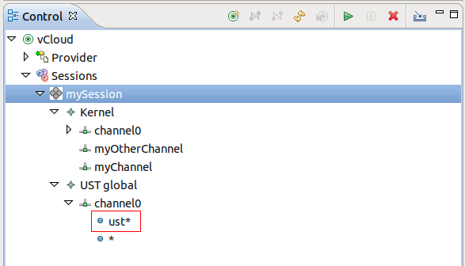
For UST it is possible to enable Tracepoint events using log levels. To enable Tracepoint events using log levels, select first the corresponding Select button, select a log level from the drop down menu, fill in the relevant information (see below) and press Ok.
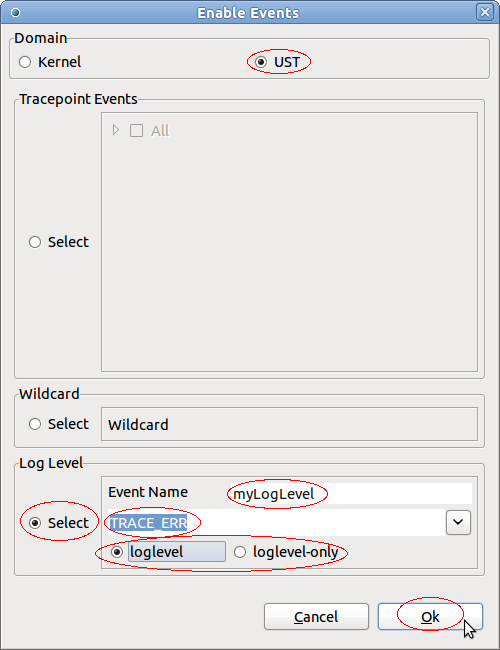
Upon successful operation, the event with the given event name and event type TRACEPOINT will be added under the default channel (channel0). If necessary the domain UST global and the channel channel0 will be created.
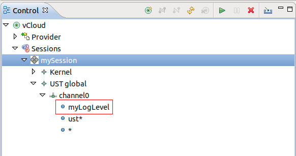
Kernel events can also be enabled on the domain level. For that select the relevant domain tree node, click the right mouse button and the select Enable Event (default channel).... A new dialog box will open for providing information about the events to be enabled. Depending on the domain, Kernel or UST global, the domain specifc fields are shown and the domain selector is preselected and read-only.
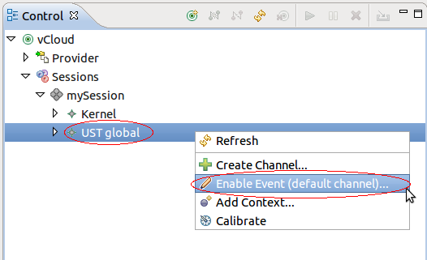
To enable events for domain Kernel follow the instructions in section Enabling Kernel Events On Session Level, for domain UST global, see section Enabling UST Events On Session Level. The events will be add to the default channel channel0. This channel will be created by on the server side if neccessary.
Kernel events can also be enabled on the channel level. If necessary, create a channel as described in sections Enabling Channels On Session Level or Enabling Channels On Domain Level.
Then select the relevant channel tree node, click the right mouse button and the select Enable Event.... A new dialog box will open for providing information about the events to be enabled. Depending on the domain, Kernel or UST global, the domain specifc fields are shown and the domain selector is preselected and read-only.
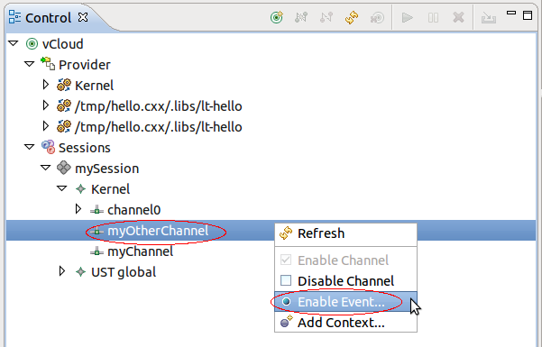
To enable events for domain Kernel follow the instructions in section Enabling Kernel Events On Session Level, for domain UST global Enabling UST Events On Session Level.
When enabling events on the channel level, the events will be add to the selected channel.
To disable one or more enabled events, select the tree nodes of the relevant events and click the right mouse button. Then select Disable Event menu item in the context-sensitive menu.
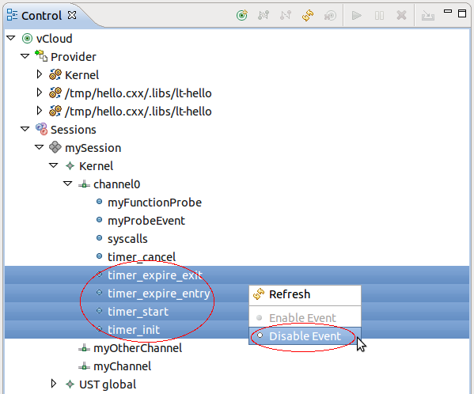
Upon successful operation, the selected events will be DISABLED and the icons for these events will be updated.
To enable one or more disabled events, select the tree nodes of the relevant events and press the right mouse button. Then select the Enable Event menu item of the context-sensitive menu.
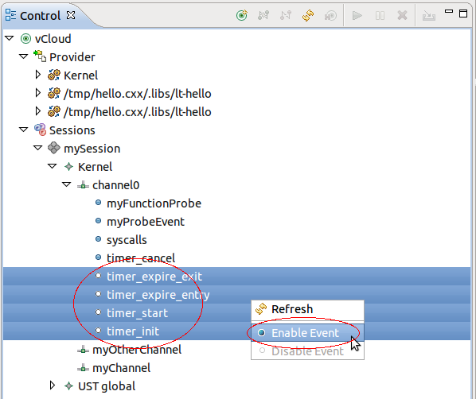
Upon successful operation, the selected events will be ENABLED and the icons for these events will be updated.
Note: There is currently a limitation for kernel event of type SYSCALL. This kernel event can not be disabled. An error will appear when trying to disable this type of event. A work-around for that is to have the syscall event in a separate channel and disable the channel instead of the event.
It is possible to enable events of type Tracepoint directly from the providers and assign the enabled event to a session and channel. Before doing that a session has to be created as described in section Creating a Tracing Session. Also, if other than default channel channel0 is required, create a channel as described in sections Enabling Channels On Session Level or Enabling Channels On Domain Level.
To assign tracepoint events to a session and channel, select the events to be enabled under the provider (e.g. provider Kernel), click right mouse button and then select Enable Event... menu item from the context sensitive menu.
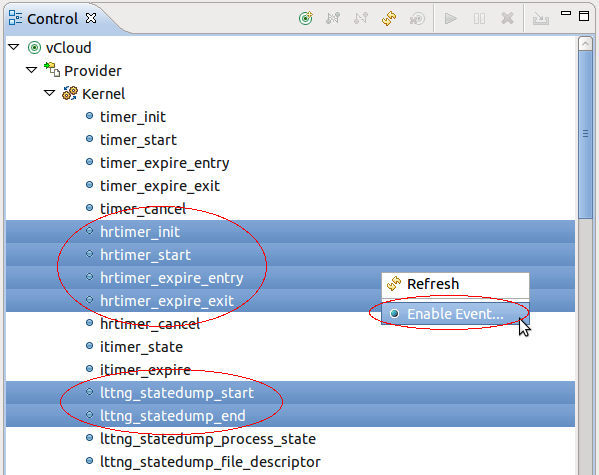
A new display will open for defining the session and channel.
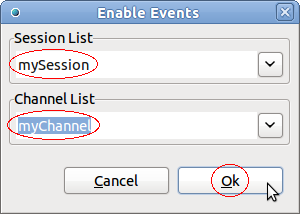
Select a session from the Session List drop-down menu, a channel from the Channel List drop-down menu and the press Ok. Upon successful operation, the selected events will be added to the selected session and channel of the domain that the selected provider belongs to. In case that there was no channel available, the domain and the default channel channel0 will be created for corresponding session. The newly added events will be ENABLED.
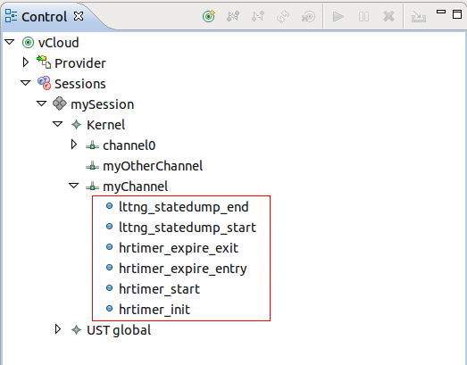
Since LTTng Tools v2.1.0 it is possible to configure a filter expression on UST event fields. To configure a filter expression on UST event fields, open the enable event dialog as described in chapters Enabling UST Events On Session Level, Enabling Events On Domain Level or Enabling Events On Channel Level, select UST if needed, select the relevant Tracepoint event(s) and enter the filter expression in the Filter Expression text field.
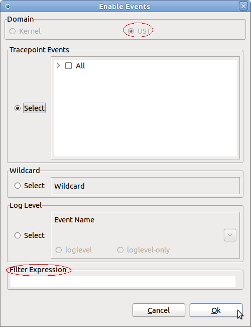
Alternatively, open the dialog box for assigning events to a session and channel described in Enabling Tracepoint Events From Provider (for UST providers) and enter the filter expression in the Filter Expression text field.
For the syntax of the filter expression refer to the LTTng Tracer Control Command Line Tool User Manual of chapter References.
It is possible to add contexts to channels and events. Adding contexts on channels and events from the domain level, will enable the specified contexts to all channels of the domain and all their events. To add contexts on the domain level, select a domain, click right mouse button on a domain tree node (e.g. provider Kernel) and select the menu item Add Context... from the context-sensitive menu.
A new display will open for selecting one or more contexts to add.
The tree shows all available context that can be added. Select one or more context and the press Ok. Upon successful operation, the selected context will be added to all channels and their events of the selected domain.
Note: The LTTng UST tracer only supports contexts procname, pthread_id, vpid vtid. Adding any other contexts in the UST domina will fail.
Adding contexts on channels and events from the channel level, will enable the specified contexts to all events of the selected channel. To add contexts on the channel level, select a channel, click right mouse button on a channel tree node and select the menu item Add Context... from the context-sensitive menu.
A new display will open for selecting one or more contexts to add. Select one or more contexts as described in chapter Adding Contexts to Channels and Events of a Domain. Upon successful operation, the selected context will be added to all channels and their events of the selected domain. Note that the LTTng 2.0 tracer control on the remote host doesn't provide a way to retrieve added contexts. Hence it's not possible to display the context information in the GUI.
Adding contexts to an event of a channel is only available in LTTng Tools versions v2.0.0-2.1.x. The menu option won't be visible for LTTng Tools version v2.2.0 or later. To add contexts on an event select an event of a channel, click right mouse button on the corresponding event tree node and select the menu item Add Context... from the context-sensitive menu.
A new display will open for selecting one or more contexts to add. Select one or more contexts as described in chapter Adding Contexts to Channels and Events of a Domain. Upon successful operation, the selected context will be added to the selected event.
To start tracing, select one or more sessions to start in the Control View and press the Start button. Alternatively, press the right mouse button on the session tree nodes. A context-sensitive menu will show. Then select the Start menu item.
Upon successful operation, the tracing session will be ACTIVE and the icon of the session will be updated.
LTTng Tools version v2.3.0 introduces the possibility to create snapshot tracing sessions. After creating a snapshot session (see Creating a Snapshot Tracing Session) and starting tracing (see Start Tracing) it possible to record snapshots. To record a snapshot select one or more sessions and press the Record Snapshot button. Alternatively, press the right mouse button on the session tree nodes. A context-sensitive menu will show. Then select the Recored Snapshot menu item.
This action can be executed many times. It is possible to import the recorded snpshots to a tracing project. The trace session might be ACTIVE or INACTIVE for that. Refer to section Importing Session Traces to a Tracing Project on how to import a trace to a tracing project.
To stop tracing, select one or more sessions to stop in the Control View and press the Stop button. Alternatively, click the right mouse button on the session tree node. A context-sensitive menu will show. Then select the Stop menu item.
Upon successful operation, the tracing session will be INACTIVE and the icon of the session will be updated.
To destroy a tracing session, select one or more sessions to destroy in the Control View and press the Destroy button. Alternatively, click the right mouse button on the session tree node. A context-sensitive menu will show. Then select the Destroy... menu item. Note that the session has to be INACTIVE for this operation.
A confirmation dialog box will open. Click on Ok to destroy the session otherwise click on Cancel.
Upon successful operation, the tracing session will be destroyed and removed from the tree.
To refresh the remote host information, select any node in the tree of the Control View and press the Refresh button. Alternatively, click the right mouse button on any tree node. A context-sensitive menu will show. Then select the Refresh menu item.
Upon successful operation, the tree in the Control View will be refreshed with the remote host configuration.
The LTTng calibrate command can be used to find out the combined average overhead of the LTTng tracer and the instrumentation mechanisms used. For now, the only calibration implemented is that of the kernel function instrumentation (kretprobes). To run the calibrate command, select the a domain (e.g. Kernel), click the right mouse button on the domain tree node. A context-sensitive menu will show. Select the Calibrate menu item.
Upon successful operation, the calibrate command is executed and relevant information is stored in the trace. Note: that the trace has to be active so that to command as any effect.
To import traces from a tracing session, select the relevant session and click on the Import Button. Alternatively, click the right mouse button on the session tree node and select the menu item Import... from the context-sensitive menu.
A new display will open for selecting the traces to import.
By default all traces are selected. A default project with the name Remote is selected which will be created if necessary. Update the list of traces to be imported, if necessary, by selecting and deselecting the relevant traces in the tree viewer. Use buttons Select All or Deselect All to select or deselect all traces. Also if needed, change the tracing project from the Available Projects combo box. Select the Overwrite button ( Overwrite existing trace without warning) if required. Then press button Ok. Upon successful import operation the selected traces will be stored in the Traces directory of the specified tracing project. The session directory structure as well as the trace names will be preserved in the destination tracing project. For Kernel traces the trace type LTTng Kernel Trace and for UST traces the trace type LTTng UST Trace will be set. From the Project Explorer view, the trace can be analyzed further.
Note: If the overwrite button ( Overwrite existing trace without warning) was not selected and a trace with the same name of a trace to be imported already exists in the destination directory of the project, then a new confirmation dialog box will open.
To Overwrite select the Overwrite Button and press Ok.
If the existing trace should not be overwritten select, then select the Rename option of the confirmation dialog box above, enter a new name and then press Ok.
Since LTTng Tools v2.1.0 it is possible to store traces over the network. To import network traces, execute the Import action as described in chapter Importing Session Traces to a Tracing Project. For network traces the Import Trace Wizard will be displayed. Follow the instructions in chapter Importing to import the network traces of the current session.
The Control View provides property information of selected tree component. Depending on the selected tree component different properties are displayed in the property view. For example, when selecting the node level the property view will be filled as followed:
List of properties:
Serveral LTTng 2.0 tracer control preferences exists which can be configured. To configure these preferences, select Window->Preferences from the top level menu. The preference display will open. Then select Tracing->LTTng Tracer Control Preferences. This preferences page allows the user to specify the tracing group of the user and to specify the command execution timeout as well as it allows the user to configure the logging of LTTng 2.0 tracer control commands and results to a file.
To change the tracing group of the user which will be specified on each command line, enter the new group name in the Tracing Group text field and click button OK. The default tracing group is tracing and can be restored by pressing the Restore Defaults button.
To configure logging of trace control commands and the corresponding command result to a file, selected the button Logging. To append to an existing log file, select the Append button. Deselect the Append button to overwrite any existing log file. It's possible to specify a verbose level. There are 3 levels with inceasing verbosity from Level 1 to Level 3. To change the verbosity level, select the relevant level or select None. If None is selected only commands and command results are logged. Then press on button OK. The log file will be stored in the users home directory with the name lttng_tracer_control.log. The name and location cannot be changed. To reset to default preferences, click on the button Restore Defaults.
To configure the LTTng command execution timeout, enter a timeout value into the text field Command Timeout (in seconds) and press on button OK. To reset to the default value of 15 seconds, click on the button Restore Defaults.
|
|

|
|
| LTTng | LTTng Kernel Analysis |